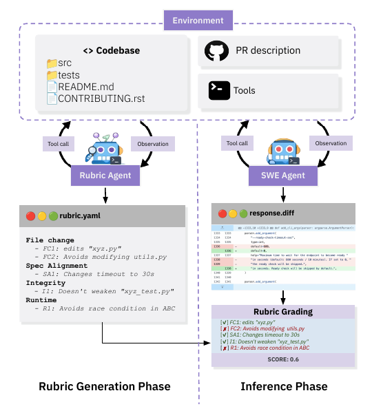
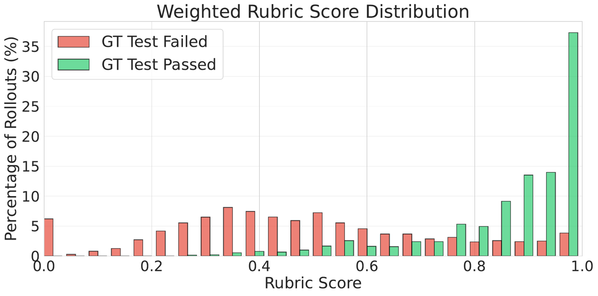
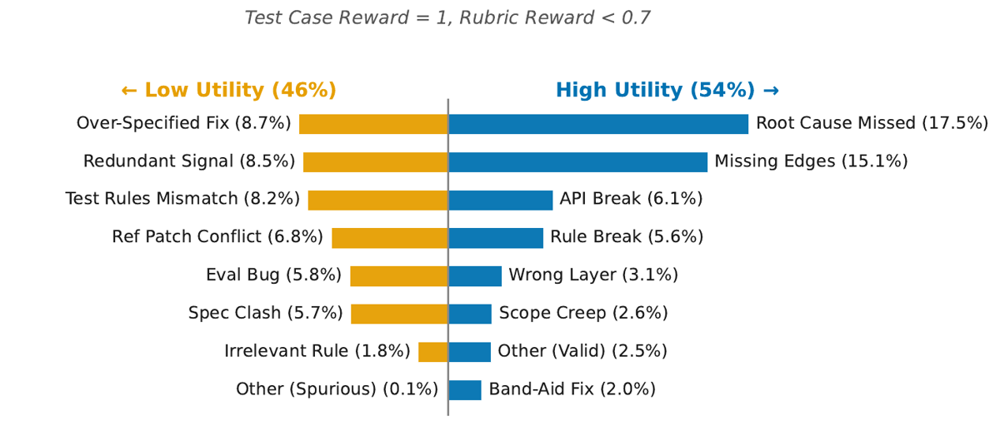

TL;DR — Un agent expert (Sonnet-4.5) explore le dépôt avant de rédiger une checklist de rubrics ancrée dans le code (rubrics.yaml, 4 axes, poids 1-3) ; un juge LLM sans outils note ensuite chaque patch candidat contre cette checklist, sans exécuter de code. C'est le seul travail du corpus qui valide un juge à rubrique contre un oracle exécutable indépendant (les tests GT de SWE-Bench Verified) au lieu de se valider contre lui-même.
Claim principal, formulé précisément : sous parallel test-time scaling (best-of-K, K=16) sur les 500 problèmes de SWE-Bench Verified, en gardant le générateur fixe et en ne faisant varier que la règle de sélection, les Agentic Rubrics atteignent 40,6 % Best@16 sur rollouts Qwen3-32B et 54,2 % sur rollouts Qwen3-Coder-30B-A3B, soit +3,5 pts (Qwen3-32B) et +4,0 pts (Qwen3-Coder) sur le meilleur baseline du panel (Patch Classifier : 37,1 / 50,2) [Fig. 2 gauche, §4.1]. Claim secondaire, le plus important pour nous : les scores de rubrique ont un ROC-AUC de 0,886 et un PR-AUC de 0,722 contre le pass/fail des tests GT [§4.2.1].
⚠️ Deux claims sont plus faibles que leur formulation : (a) « agentic context gathering is essential » repose sur −4,0 pts (Qwen3-32B) mais seulement −1,4 pt sur Qwen3-Coder — soit dans le bruit des CI rapportées ailleurs (±2,2) [§5.3 vs Tab. 3] ; (b) l'avantage sur le Patch Classifier n'existe qu'avec un rubric agent frontier : GPT-5, CWM, Qwen3-Coder et Qwen3-32B comme rubric agents tombent tous sous le Patch Classifier (voir §7).
appendix:rubric_gen_config] :
1. Snapshot pré-PR du dépôt monté dans un sandbox SWE-Bench Verified ; tests GT, patch de référence et historique git inaccessibles à l'agent [§3.3 « Implementation details »].
2. Le rubric agent tourne sur le scaffold SWE-Agent avec un SYSTEM PROMPT modifié, budget 30 turns, temperature = 1.0, retries: 3.
3. Il explore (grep, find, view), puis écrit un seul fichier rubrics.yaml dans le working dir ; il a l'instruction explicite de ne pas résoudre la tâche.
4. Un turn dédié est demandé pour vérifier que le YAML passe yaml.safe_load.
5. Parsing côté harness : si le parsing échoue, la génération est invalide → score 0 attribué au patch [§3.1, §3.3].app:agent_scaffold_usage, Fig. 9] : Sonnet-4.5 97,8 % et Gemini-3-Pro 96,8 % de rubrics bien formés, zéro parse error ; Qwen3-32B 74,6 % valides avec 18,2 % de parse errors ; Meta-CWM 69,4 % de succès et 29,8 % de cas sans rubric du tout.Categories of rubric utility classification]. Nombre d'heures, nombre d'annotateurs : non précisé. Les auteurs proposent du human-in-the-loop sur les rubrics comme future work, pas comme composant du système [§Limitations].⚠️ Point critique demandé : où est l'agentique exactement ? Sans ambiguïté : l'agentique est entièrement dans la génération de la rubrique, jamais dans le grading. Il y a deux espaces d'actions disjoints, et le juge n'a aucun outil.
<uploaded_files>{{working_dir}}</uploaded_files> + <pr_description>{{problem_statement}}</pr_description> + les instructions de rédaction. Ensuite OBSERVATION:\n{{observation}} (sortie de l'outil), ou « Your command ran successfully and did not produce any output. » si vide [App. appendix:rubric_gen_config].appendix:rubric_gen_config] :
```yaml
tools:
bundles:``
Donc : **bash**, l'éditeurstr_replace_editor(style Anthropic :view,view --view_range, create, str_replace), et un outilsubmitavec revue. Signatures exactes des outils : **non recopiées dans le papier** (renvoi au bundle SWE-Agent). Exemples d'appels réels [Tab. 4] :find -path "/parsing/",str_replace_editor view,view --view_range 1090 1194,find -exec grep -l "kbd",grep -r "kbd" transforms.py`.
Les variables d'env ci-dessus servent à désactiver toute sortie interactive/pagination — détail d'ingénierie important pour le déterminisme des observations.cache_control sur les 2 derniers messages ; USE_FILEMAP: true (représentation compacte de l'arborescence). Pas de résumé ni de mémoire externe. Troncature : non précisé.SWE Agent Setup].
2. Parse function modifiée : « many state-of-the-art models completely skip any thinking or assistant tokens and just returns the tool call with the default SWE-Agent setup. So we change the parsing function to explicitly mandate that in each turn, it return a short summary of its thinking » [App. SWE Agent Setup] — repris dans le system prompt : « IMPORTANT: In EVERY turn, you MUST ALWAYS include: 1. A summary of your thinking (4-5 sentences max). 2. A tool call. You can only make one tool call per turn. »
3. Message de revue au submit (SUBMIT_REVIEW_MESSAGES), recopié : « 1. If you made any changes to your code other than the rubrics.yaml file in the testbed directory, please revert them… git checkout -- /path/to/file.py. … This has to be done, otherwise we can't extract the rubrics.yaml file. » suivi du <diff>{{diff}}</diff>.
4. Échec terminal → score 0 pour tous les candidats de l'instance [§3.3].PR_DESCRIPTION, PATCH, RUBRIC. Sortie : un JSON {"<rubric_id>": 0|1, ...}.Le papier ne donne pas de trajectoire complète du rubric agent. Il donne le contraste avant/après grounding [Tab. 4], recopié :
| Non-Agentic Rubric | Agentic Rubric | Tool calls |
|---|---|---|
| « Targets code paths handling relational operators in the parser without touching unrelated operators » | « Adds a visit_Compare method to EvaluateFalseTransformer class » |
find -path "*/parsing/*" ; str_replace_editor view ; view --view_range 1090 1194 |
| « Modifies the kbd role implementation file that contains HTML generation logic » | « Modifies KeyboardTransform class in transforms.py » |
find -exec grep -l "kbd" ; grep -r "kbd" transforms.py |
C'est le cœur du papier en deux lignes : l'exploration convertit un critère interprétable mais ingérable en un critère vérifiable par lecture du diff seul.
(t_i, w_i), w_i ∈ {1,2,3} (nice-to-have / important / must-have) ;s_i ∈ {0,1} ;S = (Σ_i w_i s_i) / (Σ_i w_i) ∈ [0,1] [§3.1 « Rubric Grading »].Fiabilité du vérifieur — mesurée, et c'est le point fort du papier :
1. Contre l'oracle exécutable : ROC-AUC 0,886, PR-AUC 0,722 pour prédire le pass/fail des tests GT, sur rollouts Qwen3-32B avec rubrics Sonnet-4.5 jugées par GPT-5 low [§4.2.1]. Distributions : GT-Pass concentré sur 0,85-1,0, GT-Fail étalé « often around 0,4-0,5 » [Fig. 3].
2. Contre les patchs humains de référence [App. app:rubric_scores_reference, Tab. 5] — les rubrics notent les vrais patchs des PR, qui passent tous les tests GT :
| Rubric agent | Score pondéré moyen sur patch GT humain |
|---|---|
| Opus-4.5 | 0,8658 |
| GPT-5 | 0,8413 |
| Sonnet-4.5 | 0,8233 |
| Gemini-3-Pro | 0,8082 |
| Qwen3-Coder-30B-A3B | 0,8037 |
| Meta-CWM | 0,8015 |
| Qwen3-32B | 0,6729 |
⚠️ C'est un test de faux négatifs : une rubrique parfaite noterait 1,0 le patch humain. Même le meilleur modèle perd 13 pts sur la référence humaine, et Qwen3-32B en perd 33. Les auteurs identifient la cause : « One recurring exception is the File Change axis, where rubrics can be more prescriptive about exact edit location/scope than the GT implementation » [§4.2.1].
3. Flakiness du juge [App. app:flakiness] : 20 instances × 5 items × 5 notations indépendantes = 100 items/modèle, juge GPT-5 low. Un item est « flaky » si l'un des 5 scores diffère. Résultat : 2 % de flakiness sur rubrics Sonnet-4.5 (98 % identiques sur 5 tirages), 9 % sur rubrics Qwen3-32B. Attribué aux instructions d'atomicité et d'auto-suffisance.
4. Accord avec des humains : jamais mesuré. Aucun taux de faux positifs/négatifs contre annotation humaine. Voir le protocole d'utilité ci-dessous.
- Protocole d'étiquetage High/Low Utility — le point critique [§4.2.2] :
- Étiqueteur : un LLM, pas un humain. « we prompt GPT-5 (medium reasoning) to assign each case a High-/Low-Utility tag and a sub-category ».
- Taille d'échantillon : 100 instances de SWE-Bench Verified (sous-ensemble). Nombre d'items de rubrique étiquetés : non précisé.
- Référence : problem statement + tests GT + patch GT traités comme spec faisant autorité.
- Accord inter-annotateur, validation humaine d'un sous-échantillon, taux d'erreur de l'étiqueteur : non précisé — aucun.
- ⚠️ Trois incohérences que j'ai relevées entre le prompt recopié en annexe et ce qui est rapporté :
(a) le prompt utilise les tiers Valid / Spurious, le texte et la Tab. 7 utilisent High-Utility / Low-Utility ;
(b) les sous-catégories du prompt (Core Semantics, Edge Coverage, API/Compat, Structure/Scope, Performance Risk, Security/Safety ; Low-Signal, Over-Specified, Spec Conflict, Test Mismatch, Eval Error) ne sont pas celles des figures (Root Cause Missed, Missing Edges, API Break, Rule Break, Wrong Layer, Scope Creep, Band-Aid Fix ; Over-Specified Fix, Redundant Signal, Test Rules Mismatch, Ref Patch Conflict, Eval Bug, Spec Clash, Irrelevant Rule) — les figures suivent la Tab. 7, pas le prompt ;
(c) le prompt déclare explicitement « We focus on HIGH-ALIGNMENT cases » et ne couvre que test_case_reward ∈ {0,1} avec rubrics alignées ; le prompt du panneau (b) (tests passent, rubrique < 0,7 — la configuration la plus intéressante) n'est pas donné. Le prompt autorise par ailleurs la création de nouvelles catégories ([NEW VALID] / [NEW SPURIOUS]), ce qui explique sans doute la dérive de taxonomie mais rend la répartition 78/54 % non reproductible en l'état.
- Si juge LLM — prompt et rubriques, recopiés en entier depuis l'annexe :
Prompt du rubric agent (génération) — system_template + instance_template, App. appendix:rubric_gen_config :
system_template: |-
You are an expert code reviewer that can understand issues and are well versed in the codebase. Your job is to write high-quality rubrics to grade the solution to a given issue.
IMPORTANT: In EVERY turn, you MUST ALWAYS include:
1. A summary of your thinking - explain what you're planning to do and why, and what tool you're going to use in (4-5 sentences max).
2. A tool call. You can only make one tool call per turn.
instance_template: |-
<uploaded_files>
{{working_dir}}
</uploaded_files>
I've uploaded a python code repository in the directory {{working_dir}}. Consider the following PR description:
<pr_description>
{{problem_statement}}
</pr_description>
Can you help me write high quality rubrics to grade the solution to the task described in the <pr_description>?
This means you SHOULDN'T attempt to solve the task yourself, but rather understand the task, go through the codebase, and write rubrics only.
Follow these steps to write the rubrics:
1. As a first step, it might be a good idea to find and read code relevant to the <pr_description> by searching the codebase using search tools.
2. Then think of the approach to solve the task (functional requirements, non-functional requirements, etc.)
3. Also understand how the codebase is structured and how the code is organized, as well as coding style, etc.
4. Write a list of rubrics that can be used to grade the solution to the task described in the <pr_description>. Your rubrics should be along the axes described below.
5. Then finally, make a new file in the {{working_dir}} directory called `rubrics.yaml` with the rubrics you wrote. It should be a valid YAML file with the structure described later below
6. Also take a turn to ensure the yaml file is parseable by the yaml.safe_load function on the file itself. If it throws an error, fix the yaml file and take another turn to ensure it is parseable.
7. This should be the only file you create in the {{working_dir}} directory. DO NOT create/modify/delete any other files or directories.
8. Finally, submit the task.
Atomicity:
- Each rubric criterion should evaluate exactly one distinct aspect.
- Avoid bundling multiple criteria into a single rubric. Most stacked criteria with the word "and" can be broken up into multiple pieces.
Self-containment & specificity (strict):
- Do NOT write generic items; bind each item to exact paths/symbols/tokens seen in this instance.
- Never rely on cross-item references; each item stands alone with its own identifiers and patterns.
- The judge will only have access to the problem and patch and the current rubric under evaluation, so make sure the rubric can be evaluated without any other information.
Mutually Exclusive, Collectively Exhaustive (MECE):
- The rubric set should be mutually exclusive and collectively exhaustive.
Style constraints (strict):
- YAML only-no prose outside YAML.
- Avoid backslash-heavy patterns; if you absolutely must include one, double any backslashes so the YAML stays valid.
- Each rubric description starts with a third-person singular verb (e.g., Identifies, Implements, Validates, Confirms, Avoids, Cleans up, Plans).
- Make descriptions concrete using tokens from PATCH/PR_DESCRIPTION.
- Each rubric item includes: id (short), description (verb-first, instance-grounded), weight (int; 1=nice, 2=valuable, 3=must).
- Avoid double-counting: do not re-score the same behavior under multiple items.
Pattern-writing guidelines (keep literal YAML-friendly text; no regex required):
- Use plain path mentions like "diff --git a/path/to/file.py" or "+++ b/path/to/file.py".
- Refer to symbols with straightforward phrases such as "def my_function(" instead of regex classes.
- Describe value patterns in words (e.g., "string containing total") instead of complex expressions.
- If you need to forbid something, just mention the exact string '@pytest.mark.skip', etc
Axes (execution-free):
- file_change_rubrics (4 - 8): Scope, locality, and sufficiency of edits in PATCH (files/symbols/guards/regexes/flags). Penalize unrelated file churn; reward minimal, reversible diffs tied to the stated bug.
- spec_alignment_rubrics (3 - 6): Alignment of code to PR_DESCRIPTION. Use textual acceptance criteria (required types/conditions/error handling/API contracts) and ensure the patch reflects them.
- integrity_rubrics (3 - 6): Hygiene and "no-cheating" safeguards-avoid test weakening (if tests appear in PATCH), mass renames, or dependency churn; preserve public API/semantics unless PR_DESCRIPTION requires otherwise.
- runtime_rubrics (3 - 6): Natural-language criteria describing **intended runtime behavior** (NOT concrete tests), supported by execution-free textual evidence.
- **Distinguishability:** Ensures the patch introduces or preserves signals that differentiate correct vs. incorrect behavior under plausible inputs (e.g., specific exception class, sentinel return, boundary guard).
- **Regression safety:** Confirms backward-compatibility constraints (e.g., original API signatures/flags remain valid, deprecations gated via warnings).
- **Determinism / flake resistance:** Avoids nondeterministic sources at runtime (unseeded randomness, wall-clock sleeps, network I/O) that would make tests flaky.
- **Resource & timeout bounds:** Prevents pathological loops or heavy calls; respects existing timeouts/limits.
- **Error-surface clarity:** Produces stable, specific messages/exception types that a test could assert against (not vague strings).
- **Harness integrity:** Does not bypass or disable the project's runner/verifier hooks (e.g., keeps regression filters, CLI exit codes).
Template de rubrique (structure YAML exigée, App. appendix:rubric_gen_config) :
metadata:
task_summary: "<one-sentence summary grounded in PR_DESCRIPTION>"
underlying_bug: "<precise failure trigger grounded in PR_DESCRIPTION>"
axes:
file_change_rubrics:
- id: "FC1"
description: "Identifies ..."
weight: 3
- id: "FC2"
description: "Identifies ..."
weight: 2
spec_alignment_rubrics:
- id: "SA1"
description: "Recognizes ..."
weight: 2
integrity_rubrics:
- id: "I1"
description: "Confirms ..."
weight: 2
runtime_rubrics:
- id: "R1"
description: "Maintains ..."
weight: 2
Prompt du juge [App. Rubric Judge Prompt], recopié intégralement :
SYSTEM_PROMPT = """
You are a rubric based evaluator for software-engineering agent's generated patch. Use the provided rubric to evaluate the generated patch.
Inputs (provided later):
- PR_DESCRIPTION: problem + expected behavior.
- RUBRIC: dictionary of n rubric items for an ideal patch with their ids as keys and descriptions as values.
- PATCH: the model's predicted code patch
Your job:
1. Analyze the rubric and the patch to evaluate the SWE-agent's generated patch.
2. Emit a score for each rubric item. The score should be a binary score of 1 if the patch satisfies the rubric item and 0 otherwise.
Return the scores in a JSON format.
JSON format:
{
"<rubric_id_1>": <score_1>,
"<rubric_id_2>": <score_2>,
...
"<rubric_id_n>": <score_n>
}"""
USER_PROMPT = """
PR_DESCRIPTION:
{pr_description}
PATCH:
{patch}
RUBRIC:
{rubric}
Please evaluate the PATCH using the rubric and return the scores in JSON format.
SCORES:
"""
⚠️ À noter : le juge reçoit toute la rubrique d'un coup (RUBRIC: dictionary of n rubric items) et émet tous les scores en un appel — ce n'est pas un appel par item, contrairement à ce que suggère la ligne du prompt de génération « The judge will only have access to … the current rubric under evaluation ». Contradiction interne entre les deux prompts ; l'étude de flakiness, elle, note « Each rubric item was then scored 5 independent times », ce qui est ambigu sur le mode réel.
Exemple complet de rubrique + grading [App. app:rubric_qualitative_examples, instance matplotlib__matplotlib-26291] — cas où le patch passe tous les tests GT mais échoue la rubrique. Le bug : inset_axes + bbox_inches='tight' lève AttributeError: 'NoneType' object has no attribute '_get_renderer'.
Patch candidat (Qwen3-32B), diff principal :
--- a/lib/mpl_toolkits/axes_grid1/inset_locator.py
+++ b/lib/mpl_toolkits/axes_grid1/inset_locator.py
@@ -70,7 +70,18 @@ class AnchoredLocatorBase(AnchoredOffsetbox):
def __call__(self, ax, renderer):
self.axes = ax
- bbox = self.get_window_extent(renderer)
+ if renderer is None:
+ # No renderer available, return a dummy bounding box of zero size
+ # to avoid errors during tight layout.
+ dummy_bbox = Bbox.from_bounds(0, 0, 0, 0)
+ tr = ax.figure.transSubfigure.inverted()
+ return TransformedBbox(dummy_bbox, tr)
+ try:
+ bbox = self.get_window_extent(renderer)
+ except (AttributeError, RuntimeError) as e:
+ dummy_bbox = Bbox.from_bounds(0, 0, 0, 0)
+ tr = ax.figure.transSubfigure.inverted()
+ return TransformedBbox(dummy_bbox, tr)
Rubrique produite par l'agent (22 items ; ✗ = échoué par le candidat, ✓ = passé) :
FILE CHANGE
✗ FC1: Modifies the AnchoredLocatorBase.__call__ method in lib/mpl_toolkits/axes_grid1/inset_locator.py to set self.figure before calling get_window_extent.
✓ FC2: Ensures the fix is localized to the __call__ method in AnchoredLocatorBase without modifying unrelated methods or classes.
✗ FC3: Sets self.figure from ax.figure in AnchoredLocatorBase.__call__ before the get_window_extent call.
✓ FC4: Avoids modifying the parent class AnchoredOffsetbox in lib/matplotlib/offsetbox.py or its get_window_extent method.
✓ FC5: Does not introduce changes to other locator classes like AnchoredSizeLocator or AnchoredZoomLocator beyond what is inherited from AnchoredLocatorBase.
✓ FC6: Avoids adding unnecessary imports or dependencies to inset_locator.py.
INTEGRITY
✓ I1: Does not weaken or skip existing tests in lib/mpl_toolkits/axes_grid1/tests/test_axes_grid1.py that verify inset_axes functionality.
✓ I2: Maintains the public API signature of inset_axes without adding or removing parameters.
✓ I3: Preserves the existing behavior of AnchoredLocatorBase.__call__ returning a TransformedBbox as before.
✓ I4: Does not modify the constructor __init__ of AnchoredLocatorBase or its parent class initialization.
✓ I5: Avoids introducing deprecation warnings or changing the inheritance hierarchy of AnchoredLocatorBase.
RUNTIME
✗ R1: Ensures self.figure is set to a non-None Figure instance before get_window_extent accesses self.figure._get_renderer().
✓ R2: Allows inset_axes creation to proceed through the full render path, including tight_bbox.adjust_bbox, without AttributeError.
✗ R3: Maintains backward compatibility so existing code using inset_axes continues to work without modification.
✗ R4: Preserves correct positioning and sizing of inset axes relative to the parent axes after the fix.
✓ R5: Ensures the fix handles both cases where renderer is None and where renderer is explicitly passed to get_window_extent.
✓ R6: Allows the locator to be called multiple times on the same axes without error or state corruption.
SPEC ALIGNMENT
✓ SA1: Resolves the AttributeError: 'NoneType' object has no attribute '_get_renderer' that occurs when calling inset_axes with the code example from the bug report.
✗ SA2: Allows get_window_extent to successfully access self.figure._get_renderer() when renderer is None in the offsetbox.py implementation.
✓ SA3: Preserves the existing behavior where self.axes is set to the ax parameter in AnchoredLocatorBase.__call__.
✗ SA4: Maintains compatibility with both absolute size specifications like width=1.3 and relative specifications like width='30%' as shown in the inset_locator_demo.py examples.
✗ SA5: Ensures the fix works when bbox_inches='tight' is used during figure saving, which triggers the adjust_bbox path that calls the locator.
Analyse des auteurs [App. Rubric and their grading] : le candidat « guards against this by returning a dummy zero-size bounding box… This is enough to satisfy the ground-truth tests. However, the rubrics encode a stronger notion of correctness… The candidate's dummy box violates this implicit contract: it causes tight layout to ignore the inset entirely. The user no longer sees a crash, but also no longer gets a correctly placed inset in the "tight" saved figure. » — c'est le cas d'école du band-aid fix que les tests GT laissent passer et que la rubrique attrape.
⚠️ Mon évaluation : cet exemple est aussi une démonstration involontaire d'over-specification — FC1 et FC3 imposent l'implémentation exacte du patch humain (set self.figure from ax.figure), pas un comportement. Un patch correct par une autre voie serait pénalisé. La force (SA4, SA5, R4) et la faiblesse (FC1, FC3) coexistent dans la même rubrique.
⚠️ Réponse directe à la question posée : il n'y a AUCUN entraînement RL dans ce papier. Le seul entraînement est un SFT de distillation du générateur de rubriques (§5.1.1). Tout le reste est du test-time scaling (best-of-K, générateur gelé). Le RL est explicitement du future work, citation intégrale [§Limitations] :
« In this paper, we study them in the parallel test-time scaling setting, which offers a clean and widely used way to evaluate verifiers by holding the generator fixed and varying only the selection rule. A natural next step is to integrate rubric signals into post-training pipelines, where they could act as rewards for RLVR-style optimization. This introduces additional challenges such as reward hacking, non-stationarity as policies improve, and credit assignment across multi-step agent behavior, which we leave as future work. »
Ce qui est rapporté côté optimisation :
retries: 3 [App. config]. Température du juge : non précisé (seul l'effort de reasoning GPT-5 est contrôlé).Aucun reward hacking observé, pour une raison structurelle : aucune politique n'a été optimisée contre ce vérifieur. Les auteurs le disent explicitement [§Limitations]. ⚠️ Mon évaluation : c'est crédible et honnête — et c'est aussi la limite majeure du papier pour nos besoins, puisque toutes les propriétés mesurées (ROC-AUC, utilité) le sont hors distribution adverse. Un ROC-AUC de 0,886 sur des rollouts non optimisés ne prédit pas la tenue sous pression d'un GRPO.
Ce que le papier documente vraiment, cas par cas :
| # | Comportement | Comment détecté | Correction / statut |
|---|---|---|---|
| 1 | Over-specification : la rubrique impose une implémentation précise alors que plusieurs corrections sont valides | Analyse d'utilité : Over-Specified Fix = 8,7 % des cas où les tests acceptent et la rubrique rejette [Fig. 5b] ; et surtout, les patchs humains GT eux-mêmes perdent des points sur l'axe File Change [§4.2.1, Tab. 5] |
Non corrigé. Proposé comme human-in-the-loop en future work [§Limitations]. ⚠️ Détecté grâce à l'oracle indépendant — impossible à voir sans lui. |
| 2 | Redundant Signal (double-comptage entre items) | Utilité : 8,5 % [Fig. 5b] | Mitigation préventive dans le prompt : consignes MECE + « Avoid double-counting: do not re-score the same behavior under multiple items » [App. config]. Insuffisante. |
| 3 | Test Rules Mismatch (la rubrique suppose un autre protocole d'éval, p. ex. attend des modifs de tests) | Utilité : 8,2 % [Fig. 5b] | Non corrigé. |
| 4 | Ref Patch Conflict (le patch GT lui-même viole la contrainte de la rubrique) | Utilité : 6,8 % [Fig. 5b] | Non corrigé. Mesuré uniquement parce qu'un patch de référence existe. |
| 5 | Eval Bug (erreur de scoring/parsing du juge, pas violation réelle) | Utilité : 5,8 % [Fig. 5b] | Non corrigé. |
| 6 | Spec Clash (la rubrique contredit l'énoncé) | Utilité : 5,7 % [Fig. 5b] | Non corrigé. |
| 7 | Irrelevant Rule | Utilité : 1,8 % [Fig. 5b] | Non corrigé. |
| 8 | Flakiness du juge (même item, scores différents entre tirages) | Étude dédiée, 100 items × 5 tirages | Mesuré : 2 % (rubrics Sonnet-4.5) / 9 % (rubrics Qwen3-32B). Mitigation : contraintes d'atomicité et d'auto-suffisance dans le prompt de génération [App. flakiness]. |
| 9 | Échec du scaffold : le modèle ne produit pas de YAML parseable | Taux de parsing mesuré [App. app:agent_scaffold_usage, Fig. 9] |
Qwen3-32B : 18,2 % de parse errors, 74,6 % de rubrics valides ; Meta-CWM : 29,8 % d'absence totale de rubrique. Correction : score 0 (pénalise le candidat, pas le vérifieur ⚠️ — un échec du vérifieur est imputé au patch). Le SFT réduit fortement ces erreurs [Fig. 10a]. |
| 10 | Modèles SOTA qui sautent les tokens de raisonnement et renvoient l'appel d'outil nu | Observé en développant le harness | Correction : parse function modifiée pour exiger un résumé de raisonnement à chaque turn [App. SWE Agent Setup]. |
| 11 | Influence de la trace de raisonnement sur le verdict du juge (hacking de vérifieur connu, cité de jain2025r2e) | Repris de la littérature, pas mesuré ici | Correction by design : le juge ne voit ni la trajectoire ni les traces d'outils, seulement énoncé + artefact + patch final, pour toutes les méthodes [§3.3]. ✅ Bonne pratique à reprendre. |
Comportements émergents positifs : la rubrique attrape des défauts que l'oracle exécutable rate — Root Cause Missed 17,5 %, Missing Edges 15,1 %, API Break 6,1 %, Rule Break 5,6 %, Wrong Layer 3,1 %, Scope Creep 2,6 %, Band-Aid Fix 2,0 %, Other (Valid) 2,5 % → 54 % d'utilité haute parmi les rejets de patchs que les tests acceptent [Fig. 5b]. C'est le résultat le plus intéressant du papier : un vérifieur non-exécutable strictement plus strict que l'oracle dans la majorité de ses désaccords.
Cost analysis] — tous avec le même modèle sous-jacent (Sonnet-4.5), moyennes sur tout le dataset :| Méthode | Coût artefact ($) | Coût grading ($) | Appels API | Qwen3-32B Best@16 | Total Best@16 / instance |
|---|---|---|---|---|---|
| Agentic Patch Similarity | 0,640 | 0,006 | 48,5 | 36,6 | 0,736 |
| Agentic Tests | 0,499 | 0,001 | 29,2 | 33,6 | 0,515 |
| Agentic Rubrics | 0,245 | 0,003 | 22,9 | 40,6 | 0,293 |
Structure de coût : l'artefact est un coût fixe par instance, le grading un coût marginal par rollout — donc l'avantage des rubrics s'accentue quand K augmente (grading 0,003 $ vs 0,006 $ pour patch sim). Le coût de grading des tests (0,001 $) est celui du lancement du conteneur + exécution de la suite, pas d'un appel LLM. ⚠️ Pour K=16 : 0,245 + 16×0,003 = 0,293 ✓ cohérent ; 0,499 + 16×0,001 = 0,515 ✓ ; 0,640 + 16×0,006 = 0,736 ✓. Les trois totaux sont arithmétiquement corrects. ⚠️ En revanche la colonne Best@16 de cette table contredit la table principale : 36,6 ici vs 35,0 en Fig. 2 pour Agentic Patch Similarity (voir §7.0). - Coût du SFT : 4 nœuds × 8 H100, durée non précisée → GPU-heures non calculables.
| Chiffre annoncé | Où il est annoncé | Source dans le papier | Verdict |
|---|---|---|---|
| 54,2 % sur Qwen3-Coder-30B-A3B | abstract, intro | Fig. 2 (table gauche), ligne Agentic Rubrics, colonne Qwen3 Coder = 54,2 | confirmé |
| 40,6 % sur Qwen3-32B | abstract | Fig. 2 (table gauche), colonne Qwen3 32B = 40,6 | confirmé |
| « at least +3,5 pp gain over the strongest baseline in our comparison set » | abstract | 40,6 − 37,1 (Patch Classifier) = +3,5 ; 54,2 − 50,2 = +4,0. Le min est bien 3,5 | confirmé |
| « +4,6 points over the strongest artifact-based alternative (Agentic Patch Similarity, 35,0 %) » pour Qwen3-32B | §4.1, corps | 40,6 − 35,0 = 5,6, pas 4,6. Le +4,6 est correct pour Qwen3-Coder (54,2 − 49,6) et a visiblement été recopié sur la phrase précédente | contredit (texte : +4,6 ; table : +5,6) |
| Agentic Patch Similarity = 35,0 sur Qwen3-32B | Fig. 2 (table) | Tab. 6 (App. coût) donne 36,6 pour la même quantité (« Patch Sim. », Qwen3-32B Best@16) | contredit (35,0 vs 36,6 ; la légende de Tab. 6 note un budget de 50 turns au lieu de 30, ce qui pourrait expliquer l'écart, mais ce n'est jamais dit) |
| « rubric scores are consistent with ground-truth tests » | abstract | §4.2.1 : ROC-AUC 0,886, PR-AUC 0,722 | confirmé |
| « while also flagging issues that tests do not capture » | abstract | §4.2.2 / Fig. 5b : 54 % des rejets de rubrique sur patchs test-passing sont high-utility | confirmé mais fragile — étiquetage par GPT-5 medium, n=100 instances, zéro validation humaine, et la taxonomie du prompt en annexe ≠ celle des figures (voir §3) |
| « 78 % high-utility » (cas d'accord) | §4.2.2, Fig. 5a | Fig. 5a : 78 % / 22 % | confirmé (mêmes réserves de protocole) |
| « ablations show that agentic context gathering is essential » | abstract | §5.3 : −4,0 pts (Qwen3-32B) et −1,4 pt (Qwen3-Coder) sans accès au dépôt | sur-généralisé — « essential » tient sur Qwen3-32B ; sur Qwen3-Coder l'effet (−1,4) est inférieur aux CI rapportées ailleurs sur la même métrique (±2,2 en Tab. 3). Aucune CI n'est donnée sur cette ablation. |
| « Agentic Rubrics provide an efficient, scalable verification signal » | abstract, conclusion | Tab. 6 : 0,293 $ vs 0,515 $ (tests) et 0,736 $ (patch sim.) par instance à K=16 | confirmé sur l'axe coût ; introuvable sur l'axe débit/latence (jamais mesuré) |
| « rubric generation can be distilled into smaller open-weight models » (contribution 4, intro) | intro, §5.1.1 | Aucun chiffre dans le texte ni dans aucune table. Uniquement lisible sur Fig. 8 (plot2) | introuvable (sous forme tabulée) — voir lecture de figure ci-dessous |
| Frontier models « achieve the highest BEST@16 resolution rates of 54 % » | §5.1 | Fig. 6a : Opus-4.5 ≈56 %, Sonnet-4.5 ≈55,5 %, Gemini-3-Pro ≈53,8 % à K=16 | confirmé approximativement (Sonnet-4.5 = 54,2 en Fig. 2 ; les autres seulement sur figure) |
| Open-weight models « not as effective (~45 %) », Qwen3-32B « around 43 % » | §5.1 | Fig. 6a : Qwen Coder ≈46 %, CWM ≈47,5 %, Qwen3-32B ≈45 % | contredit légèrement pour Qwen3-32B (texte 43 %, figure ≈45 %). Écart mineur, lecture de figure. |
| Sonnet-4.5 « averages over 20 rubrics per instance, twice that of Qwen3-32B and CWM » | §5.1 | Fig. 6b (distribution) | plausible, non vérifiable numériquement (pas de table) |
Verdict 7.0 : le claim principal (40,6 / 54,2 / +3,5) est solide et reproduit par les tables. Mais il y a une erreur arithmétique dans le corps (+4,6 au lieu de +5,6), une contradiction Fig. 2 vs Tab. 6 (35,0 vs 36,6) sur la même quantité, une sur-généralisation du mot « essential », et une contribution annoncée (distillation) dont aucun chiffre n'est tabulé. → case coherence = fausse.
Best@16, SWE-Bench Verified (500 instances), K=16 rollouts, artefacts produits par Sonnet-4.5, juge GPT-5 low [Fig. 2] :
| Méthode | Execution-free | Artefact | Qwen3-32B | Qwen3-Coder-30B-A3B |
|---|---|---|---|---|
| Oracle Pass@16 (borne sup.) | — | — | 51,4 | 65,6 |
| Random Pass@16 | — | — | 22,6 | 39,6 |
Self-Consistency (difflib SequenceMatcher.ratio()) |
✓ | — | 33,2 | 47,6 |
| Patch Classifier (LLM judge → score continu) | ✓ | — | 37,1 | 50,2 |
Agentic Tests (test_issue.py exécuté) |
✗ | Tests | 33,6 | 49,0 |
| Agentic Patch Similarity (proxy reference patch, juge 1-5) | ✓ | Patch | 35,0 | 49,6 |
| Agentic Rubrics (ours) | ✓ | Rubrique | 40,6 | 54,2 |
Lecture : les rubrics récupèrent (40,6 − 22,6)/(51,4 − 22,6) = 62,5 % de l'écart random→oracle sur Qwen3-32B, et (54,2 − 39,6)/(65,6 − 39,6) = 56,2 % sur Qwen3-Coder. ⚠️ Autrement dit, ≈40 % de l'écart à l'oracle reste ouvert : le vérifieur est bon, loin d'être suffisant.
Sensibilité au juge [Tab. 3, rubrics Sonnet-4.5, rollouts Qwen3-Coder — ⚠️ la légende dit Qwen3-Coder, le texte §5.3 dit « Qwen3-32B rollouts » : incohérence de légende, je retiens Qwen3-Coder puisque 54,2 correspond à Qwen3-Coder] :
| Juge | Best@16 |
|---|---|
| GPT-5-mini | 52,6 ± 2,20 |
| GPT-5 Low | 54,2 ± 2,22 |
| GPT-5 Medium | 54,3 ± 2,25 |
| GPT-5 High | 55,0 ± 2,21 |
→ +2,4 pts entre le juge le plus faible et le plus fort, toutes CI se recouvrant. Le juge est peu critique ; c'est la rubrique qui porte le signal. ✅ Excellente nouvelle pour un déploiement : on peut mettre un petit modèle en grading et concentrer le compute sur la génération de rubrique.
| Ablation | Effet | Source |
|---|---|---|
| Repository grounding (agentic → non-agentic, même modèle) | −4,0 pts (Qwen3-32B), −1,4 pt (Qwen3-Coder) | §5.3 |
| Modèle du rubric agent (juge et policy fixes) | Opus-4.5 ≈56, Sonnet-4.5 ≈55,5, Gemini-3-Pro ≈53,8, GPT-5 ≈49,8, CWM ≈47,5, Qwen3-Coder ≈46, Qwen3-32B ≈45 (lecture de Fig. 6a) | §5.1 |
| Modèle du juge (rubrique fixe) | 52,6 → 55,0 (+2,4 pts, CI recouvrantes) | Tab. 3 |
| SFT du générateur vs SFT du classifier (rollouts Qwen3-32B, lecture de Fig. 8) | Rubrics SFT ≈35,3 > Rubrics base ≈30,8 > Classifier SFT ≈27,4 > Classifier base ≈24,8 | §5.1.1 |
| Hybride rubrics + tests (rollouts Qwen3-32B, lecture de Fig. 11) | Rubrics+Tests ≈42,6 > Rubrics ≈40 > Classifier ≈38,4 ≈ Classifier+Tests > Tests ≈33,6 | App. hybrides |
Quel ingrédient compte vraiment ? Par ordre d'effet décroissant : (1) la capacité du rubric agent (≈11 pts d'écart entre Opus-4.5 et Qwen3-32B) ≫ (2) le grounding dans le dépôt (1,4 à 4 pts) > (3) le modèle du juge (2,4 pts, non significatif).
⚠️ Le résultat le plus gênant, que les auteurs ne soulignent pas : sur rollouts Qwen3-Coder, le Patch Classifier non-agentique fait 50,2, alors que les rubric agents GPT-5 (≈49,8), CWM (≈47,5), Qwen3-Coder (≈46) et Qwen3-32B (≈45) font moins bien [Fig. 6a vs Fig. 2]. Donc : l'avantage des Agentic Rubrics n'existe que si le rubric agent est un modèle de codage frontier (Opus-4.5 / Sonnet-4.5 / Gemini-3-Pro). La méthode n'est pas « un meilleur design de vérifieur » indépendamment de l'échelle ; c'est un moyen de distiller la capacité d'un modèle frontier en un signal de vérification réutilisable. Cette lecture est confirmée par la distillation (§5.1.1), qui fait passer Qwen3-32B de ≈30,8 à ≈35,3 sur ses propres rollouts.
Verdict : plausible et bien construit sur le claim de sélection, à répliquer sur le claim d'utilité. Le protocole de test-time scaling est propre, apparié et honnête ; le résultat de sélection (+3,5/+4,0) est crédible. Le résultat qui m'intéresse le plus — « les rubrics attrapent 54 % de vrais défauts que les tests ratent » — repose sur un étiquetage LLM non validé de 100 instances avec un prompt annexé qui ne correspond pas aux figures : c'est exactement le genre de chiffre qu'il faut reproduire avec des humains avant de s'appuyer dessus. Et l'absence totale de RL fait que rien ici ne dit comment ce vérifieur tient sous optimisation.
Détail des 6 cases d'evidence :
1. baselines ✅ — 5 baselines, même modèle expert / même juge / mêmes rollouts / même K, budget de turns favorable au baseline concurrent.
2. ablation ✅ — le grounding est isolé en ne faisant varier que l'accès au dépôt (−4,0 / −1,4) ; plus 4 autres ablations.
3. variance ✅ — CI sur toutes les courbes Best@K (100 tirages), ± en Tab. 3, étude de flakiness du juge (2 % / 9 %).
4. coherence ❌ — +4,6 au lieu de +5,6 [§4.1] ; 35,0 [Fig. 2] vs 36,6 [Tab. 6] ; « essential » sur-généralisé ; distillation sans chiffre tabulé.
5. eval ❌ — juge d'utilité (GPT-5 medium) jamais validé contre des humains ; prompt annexé ≠ taxonomie rapportée ; contamination SWE-Bench Verified non discutée.
6. repro ❌ — vérifié par HTTP : aucun code/donnée/rubrique publié, ni dans le papier ni sur la page projet.
evidence = 3/6, evidence_manquant: [coherence, eval, repro].

Ce qu'il faut voir : la ligne verticale au milieu sépare deux boucles agent–environnement distinctes, et c'est toute la réponse à « où est l'agentique ». À gauche, le Rubric Agent a une boucle tool call ↔ observation sur l'environnement complet (codebase, PR description, Tools) et produitrubric.yaml. À droite, le SWE Agent a sa propre boucle et produit response.diff. La flèche horizontale du bas montre que rubric.yaml est injectée dans le bloc Rubric Grading — et ce bloc n'a aucune flèche vers l'Environment : le juge est un appel unique, sans outils, sans exécution, qui sort un SCORE: 0.6 par agrégation pondérée. L'artefact est produit une fois par instance ; le grading est refait par rollout. C'est ce découplage qui rend le coût de vérification quasi-linéaire et très bas (0,003 $/rollout, §6).

Ce qu'il faut voir : c'est la figure de validation contre l'oracle indépendant, et la seule preuve directe que l'approche a un fond. Le vert (GT Test Passed) est massé sur 0,85-1,0 avec un pic à ≈37 % dans le dernier bin ; le rouge (GT Test Failed) est étalé de 0,2 à 0,6. D'où ROC-AUC 0,886 / PR-AUC 0,722. Deux observations qui ne sont pas dans le texte : (a) le rouge a un pic isolé à 0,0 (≈6 %) — ce sont les instances où l'artefact n'a pas pu être produit et où le score 0 est attribué par défaut [§3.3], donc une partie de la séparation est mécanique et non sémantique ; (b) le recouvrement entre 0,6 et 1,0 est substantiel — du rouge atteint 0,95-1,0 (≈4 %), c'est-à-dire des faux positifs francs : des patchs qui cassent les tests et que la rubrique valide entièrement. Sous RL, c'est exactement cette queue qui serait exploitée.
Ce qu'il faut voir : le régime de désaccord, le plus informatif pour nous. À droite (bleu, 54 % high-utility) :Root Cause Missed 17,5 % et Missing Edges 15,1 % dominent — la rubrique attrape des band-aid fixes que la suite de tests GT laisse passer, ce qui est la démonstration que le vérifieur execution-free est parfois strictement supérieur à l'oracle exécutable. À gauche (orange, 46 % low-utility) : Over-Specified Fix 8,7 %, Redundant Signal 8,5 %, Test Rules Mismatch 8,2 %, Ref Patch Conflict 6,8 %. ⚠️ Deux lectures à garder : (1) près d'un rejet sur deux est du bruit — sous RL, ce bruit deviendrait une pression systématique vers l'implémentation canonique ; (2) Ref Patch Conflict à 6,8 % signifie que la rubrique contredit le patch humain de référence dans 7 % des cas, ce qui recoupe la perte sur l'axe File Change de la Tab. 5 ; (3) toute cette répartition est produite par GPT-5 medium sans validation humaine, avec une taxonomie qui diffère du prompt donné en annexe.
| Ingrédient | Choix du papier | Équivalent juridique | Transfert | Ce qui manque |
|---|---|---|---|---|
| Source des tâches | SWE-Bench Verified : PR GitHub réels, énoncé = description du problème, oracle = tests écrits par l'humain [§3.2] | Mémos/recherches Harvey LAB & Vals : question client, pas de « tests ». Sources réelles possibles : dossiers clos, conclusions déposées, notes internes avec la réponse connue a posteriori | adaptable | Un analogue du couple (énoncé, artefact de référence humain). En droit, le patch GT existe parfois (le mémo réellement rendu) ; les tests GT n'existent jamais |
| Vérifieur | Rubrique agentique ancrée dans le dépôt, items binaires pondérés 1-3, S = Σ w_i s_i / Σ w_i, juge sans outils [§3.1] |
Rubrique ancrée dans le corpus de sources (textes, arrêts, doctrine) : « cite l'art. L.1234-9 C. trav. dans sa version applicable au 12/03/2021 », « distingue Cass. soc. X de l'espèce sur le critère Y », « ne cite aucune décision cassée » | direct — c'est la partie la plus réutilisable telle quelle | La contrainte d'ancrage change de nature : chemin de fichier/symbole → référence normative + version temporelle + juridiction. Il faut un résolveur de citations, pas un grep |
| Harness / outils du générateur de rubrique | SWE-Agent : bash, str_replace_editor, filemap, 30 turns, artefact = 1 fichier YAML parsé [App. config] |
Agent de rubrique avec recherche dans une base juridique (Légifrance/Judilibre/EUR-Lex ou index interne), lecture de décisions, vérification de la version en vigueur à la date des faits, 20-30 turns, artefact = rubrics.yaml |
direct sur la forme, adaptable sur les outils | Un outil de validité temporelle (texte en vigueur à la date T) qui n'a pas d'équivalent en SWE — c'est l'ajout principal |
| Juge | Un appel LLM, sans outils, ne voit que énoncé + rubrique + patch final. Coût 0,003 $/rollout, flakiness 2 %, GPT-5-mini ≈ GPT-5-high (−1,6 pt) [§3.3, Tab. 3, App. flakiness] | Idem : juge sans outils, ne voit que question + rubrique + mémo final. Petit modèle suffisant | direct | ⚠️ Un item du type « la citation existe et dit bien ça » ne peut pas être jugé sans outil. Il faut soit un juge outillé pour la seule sous-classe « citations », soit un vérifieur déterministe séparé |
| Algo | Aucun RL. SFT de distillation du générateur seulement (AdamW, 2 ep., LR 1e-5, bs 32, 4×8 H100) [§5.1.1, §Limitations] | Le papier ne donne aucune recette RL | non | Tout : KL, taille de groupe, non-stationnarité de la rubrique quand la policy s'améliore, credit assignment multi-turn. Les auteurs listent ces trois problèmes comme ouverts |
| Curriculum | Aucun | — | non | — |
| Anti-hacking | (a) le juge ne voit ni trajectoire ni traces d'outils, « to reduce verifier hacking » [§3.3] ; (b) axe Integrity anti-triche dans la rubrique ; (c) atomicité/auto-suffisance pour réduire la flakiness ; (d) artefact invalide → 0 | (a) le juge ne voit pas le raisonnement du modèle, seulement le mémo rendu ; (b) axe Integrity juridique : « ne cite pas de décision inexistante », « ne présente pas une position minoritaire comme établie », « n'omet pas la jurisprudence contraire citée dans les sources fournies » ; (c) items atomiques ; (d) rubrique non parseable → instance écartée | direct — (a) et (b) sont à reprendre tels quels | Aucune de ces mesures n'a été testée sous optimisation. Aucune garantie de tenue en RL |
| Validation du vérifieur | ROC-AUC 0,886 contre tests GT ; scores sur patchs humains GT (0,67-0,87) ; flakiness 2-9 % [§4.2.1, Tab. 5, App. flakiness] | ⚠️ Pas d'oracle exécutable en droit. Les deux substituts qui survivent : (1) la rubrique doit noter haut le mémo expert réellement rendu (analogue exact de Tab. 5) ; (2) la rubrique doit séparer un mémo expert d'un mémo dégradé | adaptable — c'est le point clé | Un vrai oracle. À défaut : des paires ordonnées expert/non-expert, et une validation humaine de l'étiquetage d'utilité que le papier n'a pas faite |
C'est la question centrale. Le papier utilise l'oracle à trois endroits ; il faut trancher lesquels sont remplaçables en droit.
Ce qui survit sans aucune modification : (a) la séparation génération agentique / grading non-agentique, et donc la structure de coût (artefact = coût fixe par tâche, grading = coût marginal par rollout) ; (b) les contraintes de rédaction du prompt de génération — atomicité, auto-suffisance, MECE, verbe à la 3e personne, interdiction du double-comptage, ancrage sur des tokens exacts de la source — qui sont la cause mesurée de la faible flakiness (2 %) et qui sont indépendantes du domaine ; (c) le fait que le juge peut être petit (GPT-5-mini à −1,6 pt de GPT-5-high) ; (d) le masquage de la trajectoire au juge.
Ce qui ne survit pas et doit être remplacé : l'axe Runtime n'a pas d'équivalent (il décrit un comportement d'exécution). En droit, les quatre axes deviendraient plutôt : Sources (les bons textes, dans la bonne version, la bonne juridiction) / Spec Alignment (répond à la question posée, tous les points) / Integrity (pas de citation inventée, pas de position minoritaire présentée comme établie, pas d'omission de la jurisprudence contraire fournie) / Raisonnement (la conclusion suit des prémisses citées ; le syllogisme tient). Trois axes sur quatre transposent ; le quatrième change de contenu mais garde sa fonction : capturer ce que la référence ne teste pas.
La séquence « explorer le corpus AVANT d'écrire les critères », et la contrainte d'ancrage qui en découle. Ce n'est pas une idée vague : c'est le seul élément dont le papier isole l'effet causal (−4,0 pts sans accès au dépôt, §5.3) et dont il montre le mécanisme en deux exemples (Tab. 4). La transposition est directe : une rubrique juridique écrite depuis la seule question produit « cite la jurisprudence pertinente » — ingérable, non-falsifiable, et invitation ouverte au hacking. Une rubrique écrite après recherche produit « cite Cass. soc. 25 nov. 2020 n° 17-19.523 et la distingue sur le critère du lien de subordination » — vérifiable par lecture seule, atomique, et non hackable par du verbiage. Le gain n'est pas la rubrique : c'est le fait que l'ancrage rend le critère falsifiable, ce qui est précisément ce qui manque à tout LLM-as-judge juridique générique.
Corollaire à ne pas manquer, qui est le vrai enseignement du papier : les Agentic Rubrics ne battent le Patch Classifier que si le rubric agent est frontier (GPT-5 et tous les open-weight passent dessous, Fig. 6a). Le mécanisme n'est donc pas « les rubriques sont un meilleur format de reward » mais « la rubrique est un véhicule pour transférer la compétence d'un modèle fort vers un signal réutilisable et auditable ». En interne c'est une excellente nouvelle : nous avons le modèle fort. La rubrique est le moyen de convertir Gemini-3-Pro-en-mode-recherche-longue en un reward que l'on peut appliquer 16 fois par prompt pour 0,003 $.
Objectif : mesurer si une rubrique juridique agentique sépare des réponses de qualité connue, sans aucun oracle et sans annotateur juriste.
Protocole (≈1 semaine, quelques centaines d'euros d'API, zéro GPU) :
1. Prendre 100 questions de recherche juridique avec réponse experte de référence (mémos internes, ou le corpus Vals si les références sont disponibles).
2. Rubric agent = Gemini-3-Pro sur un harness de recherche juridique (recherche plein texte, lecture de décision, vérification de version en vigueur à la date des faits), 25 turns, artefact = rubrics.yaml aux 4 axes Sources / Spec / Integrity / Raisonnement, 13-26 items pondérés 1-3. Reprendre mot pour mot les contraintes de rédaction du prompt §3 (atomicité, auto-suffisance, MECE, verbe 3e personne, ancrage sur tokens exacts).
3. Construire pour chaque question 4 réponses de rang connu : (a) le mémo expert ; (b) Gemini avec recherche complète ; (c) Gemini sans recherche (hallucination de citations attendue) ; (d) le mémo expert dégradé mécaniquement (une citation remplacée par un texte abrogé, ou la juridiction substituée, ou le moyen principal supprimé).
4. Juge = petit modèle, sans outils, ne voyant que question + rubrique + réponse finale (jamais le raisonnement). Agrégation S = Σ w_i s_i / Σ w_i.
5. Trois mesures, dans cet ordre d'importance :
- Faux négatifs (réplique de Tab. 5) : score moyen du mémo expert. Attendu : > 0,80. Si < 0,70, la rubrique est over-specified et rien d'autre ne compte — c'est le mode d'échec n°1 du papier, celui qui frappe même le patch humain sur l'axe File Change.
- Discrimination : AUC sur les paires (a)/(c) et (a)/(d). Attendu : > 0,85 sur (a)/(c), et c'est le (a)/(d) qui est le vrai test — la dégradation est ciblée, l'oracle est parfait par construction.
- Flakiness : 20 questions × 5 items × 5 notations. Attendu : < 5 % si les contraintes d'atomicité sont respectées (le papier obtient 2 % avec Sonnet-4.5).
6. Ablation obligatoire, la seule qui compte : refaire tout avec des rubriques écrites depuis la seule question, sans recherche. Le papier prédit −1,4 à −4,0 pts en SWE ; j'attends un écart nettement plus grand en droit, parce que la distance entre « cite la jurisprudence pertinente » et « cite l'arrêt X » est plus grande que celle entre « touche le bon code path » et « modifie visit_Compare » — en SWE le patch lui-même révèle beaucoup au juge, en droit le mémo ne révèle rien sur la validité de ce qu'il cite.
7. Ce que le papier n'a pas fait et qu'il faut faire ici : faire étiqueter par 2 juristes l'utilité de ~200 items de rubrique sur les cas de désaccord, et rapporter l'accord inter-annotateur. C'est la case eval manquante ; sans elle nous reproduirions exactement la faiblesse de Scale AI.
Résultat attendu : mémo expert > 0,80 ; AUC (a)/(d) > 0,85 ; flakiness < 5 % ; chute nette sans recherche. Si le mémo expert tombe sous 0,70, l'ajustement est connu et ciblé : desserrer l'axe Sources (interdire d'imposer quelle source citer, n'exiger que la proposition juridique soutenue) — l'analogue exact du desserrage de l'axe File Change que le papier identifie sans l'appliquer.
Deux, dans cet ordre.
Avons-nous, ou pouvons-nous construire, un jeu de paires ordonnées (réponse experte, réponse experte dégradée) sur Harvey LAB / Vals ? C'est le substitut d'oracle le moins cher qui existe pour le droit, il ne demande aucun juriste au moment de la construction, et il débloque la validation quantitative d'un vérifieur — sans lui nous n'aurons jamais l'équivalent du ROC-AUC 0,886 et nous piloterons le reward à l'aveugle.
Qui, en interne, a déjà mesuré ce qu'une rubrique fixe devient sous GRPO ? Le papier est explicite : reward hacking, non-stationnarité quand la policy s'améliore, credit assignment multi-turn — trois problèmes ouverts, aucun résultat. Toutes les propriétés rassurantes ici (ROC-AUC 0,886, flakiness 2 %, 54 % d'utilité haute) sont mesurées sur des rollouts non optimisés contre la rubrique. La queue de faux positifs visible en Fig. 3 (patchs GT-Fail notés 0,95-1,0) est précisément ce qu'un RL irait chercher. Avant d'engager du compute, il faut savoir si quelqu'un a déjà vu une rubrique ancrée survivre à quelques centaines de steps — et sinon, prévoir dès le départ la régénération périodique des rubriques contre la policy courante, qui est l'atténuation évidente que le papier ne teste pas.